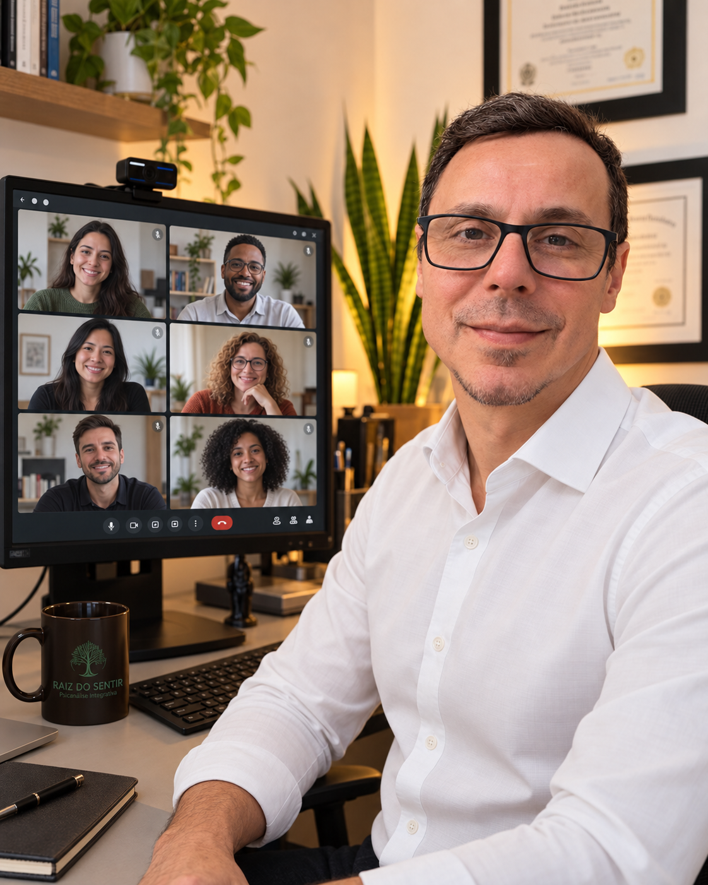

Jefferson, quero agradecer pelo método TAGzero. É simplesmente fantástico, dinâmico, terapêutico e divertido, entre outras qualidades. Indico para todos, 100%!
Vera FloristhéPsicóloga
Um espaço para compreender o que você sente, interromper padrões que machucam e construir novas formas de viver.
Você não precisa chegar com tudo organizado. A terapia começa a partir do que está vivo em você agora.
Nem sempre o sofrimento aparece como crise. Às vezes, ele surge como cansaço, culpa, autocobrança ou a sensação de viver para todos, menos para você.
O atendimento parte da sua história, sem fórmulas prontas. Juntos, identificamos o que mantém o sofrimento e trabalhamos novas respostas emocionais.
Pensamentos acelerados, medo, controle, exaustão e dificuldade para descansar.
↗ 02Um lugar seguro para sustentar a ausência e reorganizar a vida sem apagar o vínculo.
↗ 03Limites, culpa, dependência emocional e padrões que se repetem nos vínculos.
↗ 04Compreender o que existe por trás do comportamento para sair do ciclo de cobrança.
↗Sua história merece mais do que conselhos rápidos. Ela precisa de escuta, sentido e movimento.
Para reconhecer os conflitos, defesas e repetições que organizam sua forma de sentir.
Recursos escolhidos de acordo com sua necessidade, seu ritmo e o objetivo do processo.
Compreensão que chega à vida cotidiana, aos limites, às escolhas e aos relacionamentos.
Um encontro sem julgamento, com acolhimento responsável e comunicação clara.

Psicanalista e terapeuta integrativo. Vivo em Londres e acompanho adultos que enfrentam ansiedade, luto, baixa autoestima, compulsões e conflitos nos relacionamentos.
Minha experiência na educação e na clínica reforçou uma convicção: compreender a origem do sofrimento muda a forma como você responde ao presente. O processo respeita sua singularidade e transforma reflexão em escolhas possíveis.
Experiências guiadas para quem deseja trabalhar um tema específico em grupo ou no próprio ritmo.
Para reconhecer papéis, culpa e sobrecarga emocional, recuperando espaço para si.
Dez encontros para acolher o luto e reconstruir sentido sem apressar o processo.
Um processo para compreender gatilhos, reduzir o ciclo de medo e retomar presença.
Relatos de pessoas que encontraram espaço para compreender emoções, elaborar experiências e construir novas respostas.
Cada experiência terapêutica é singular.
Jefferson, quero agradecer pelo método TAGzero. É simplesmente fantástico, dinâmico, terapêutico e divertido, entre outras qualidades. Indico para todos, 100%!
Cheguei à terapia em um momento em que me sentia preso em padrões emocionais que não conseguia entender. Durante as sessões, fui percebendo um processo transformador, que me ajudou a acessar lembranças e sentimentos de forma segura, trazendo compreensão e ressignificação. Hoje me sinto mais leve, confiante e em paz comigo mesmo. A terapia foi essencial nessa mudança e recomendo. Muito obrigado, Jefferson Delgado.
Essa experiência foi transformadora. Descobri traumas que nem sabia o quanto me afetavam e, já nas primeiras semanas, percebi mudanças reais em mim. Ressignificar e seguir sem essas amarras foi libertador. Obrigada, Jefferson Delgado, por me ajudar a superar e encontrar paz dentro de mim.
Comecei a terapia com o Jefferson em um momento em que eu estava perdido, sem saber exatamente o que sentia e por que sentia. Tinha muitos episódios de explosões de raiva, agressividade e pensamentos negativos sobre mim mesmo, principalmente pela culpa que vinha após esses momentos.
Hoje me vejo mais calmo e centrado. Consigo entender muito melhor minhas emoções e lidar com elas de forma mais saudável. Ainda tenho meus deslizes, mas estou me esforçando para melhorar a cada dia.
Sou muito grato ao Jefferson pelo trabalho, pela dedicação e pelo cuidado que teve comigo durante toda essa caminhada. Espero continuar trilhando esse caminho ao lado dele por muito tempo.
Jefferson, meu colega querido, boa tarde! Quero te dar um feedback de coração sobre o nosso trabalho. Essas sessões de autoconhecimento têm sido muito importantes para mim e têm contribuído muito para o meu crescimento pessoal e profissional.
Tenho levado muitos dos aprendizados para a minha vida e também aplicado alguns deles nas minhas sessões. Tenho percebido o quanto isso tem sido positivo e transformador no meu trabalho com meus clientes.
Quero agradecer pela dedicação, pela troca, pela partilha de conhecimento e por tudo o que você acrescenta a cada encontro. Sou muito grata por essa caminhada e por aprender com você toda semana. Tem feito muita diferença para mim!
Cuidar da mente com um profissional mudou meu jogo. Hoje vivo com muito mais leveza e direção.
Envie uma mensagem. Você recebe as informações sobre atendimento, horários e o formato mais adequado para sua necessidade.